>Lagosur se inauguró el Miércoles 19 de Julio de 1989 mientras que el 23 de Noviembre de ese mismo año se inauguró el centro comercial.
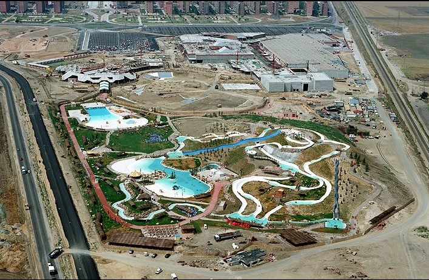> El proyecto original incluía una estación de tren cercana al centro comercial pero la idea fue retirada porque años antes ya habían construido una estación relativamente cerca, Zarzaquemada. No obstante en algunos planos de la época aparecía la estación de Parquesur.
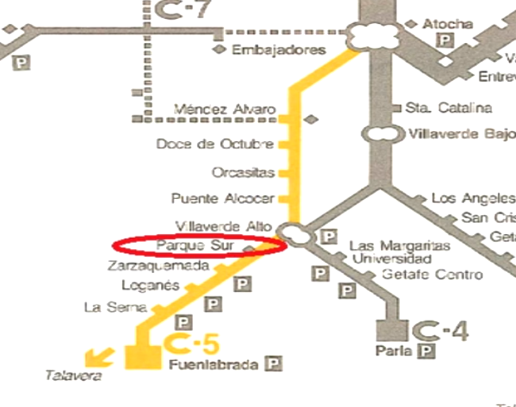>La empresa encargada de llevar a cabo el proyecto fue "Parques urbanos S.A" con los arquitectos: Juan Thomas de Antonio, Francisco Soler López y Antonio Luis López Román.
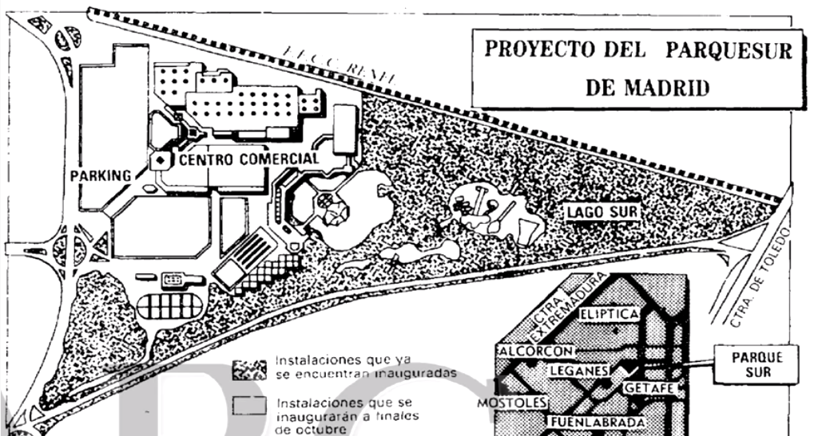>El centro comercial ha sido set de rodaje de varias series, películas y videoclips. Por ejemplo el videoclip "Deja que les diga que no" de Rosendo o la película de Martes y Trece "El robobo de la jojoya".
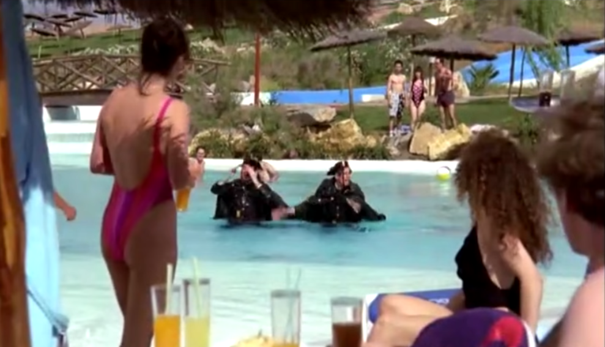>Las noches de verano conectaban la discoteca Universal Sur con la piscina de olas. Esta combinación de discoteca + piscina hizo que fuese una de las discotecas más sonadas de la Comunidad de Madrid a principios de los 90s.
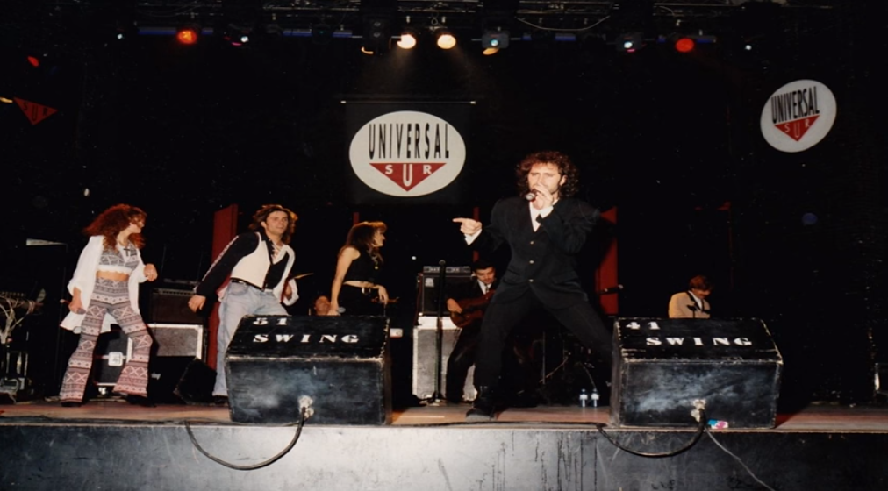>En la actualidad en el terreno del parque acuático hay una tienda de bricolaje y en el terreno del parque de atracciones una tienda de repuestos de coches.
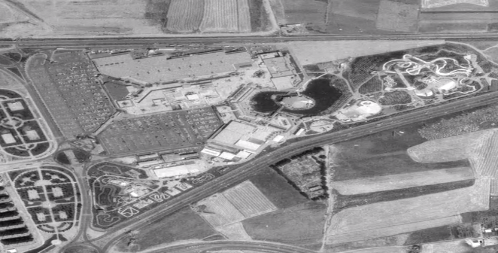>Así mismo, la antigua discoteca hoy día son los cines del centro comercial y el lago ha sido sustituido por otro más artificial sin la isla.
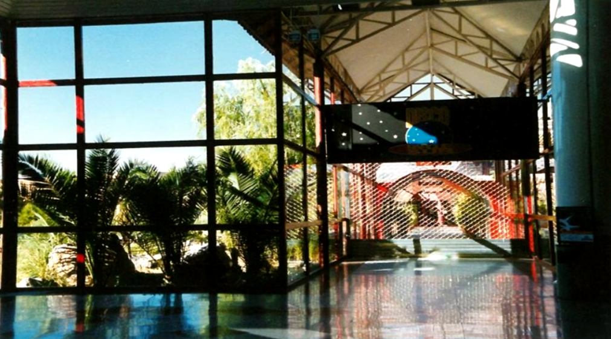>Al cerrar el parque acuático, después de un largo abandono, intentaron hacer un parque temático con motivos orientales pero la idea fracasó.
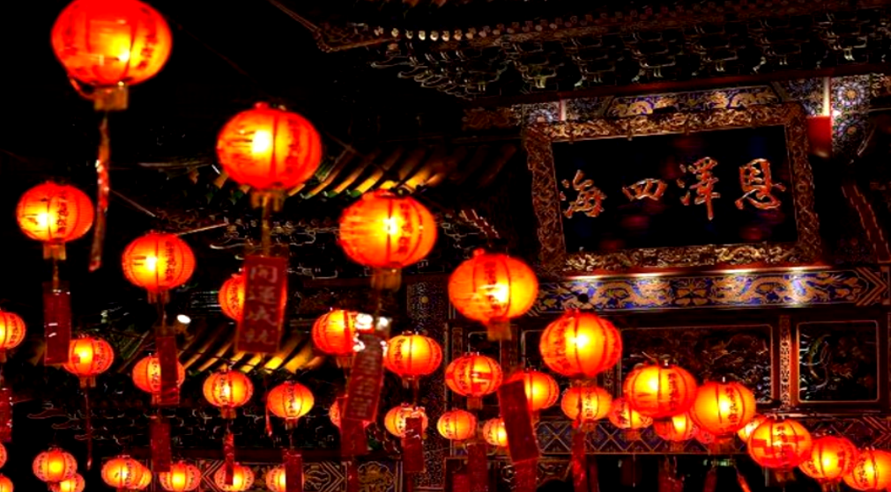>La mascota del parque era una especie de tucán que podía ser rojo o azul.
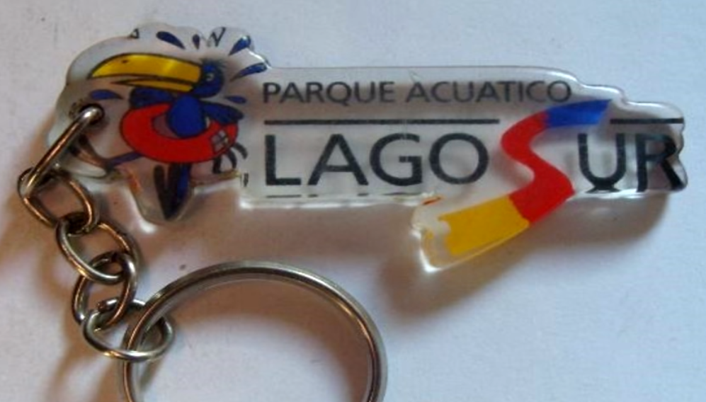>En mitad del lago había una isla artificial conocida como la "Isla de Jauja" donde se encontraba la discoteca.
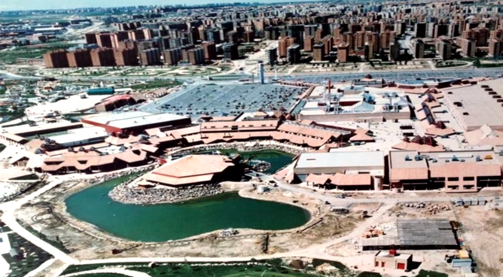>El parque de atracciones cerró en 1992, dos años antes de que lo hiciese el parque acuático.
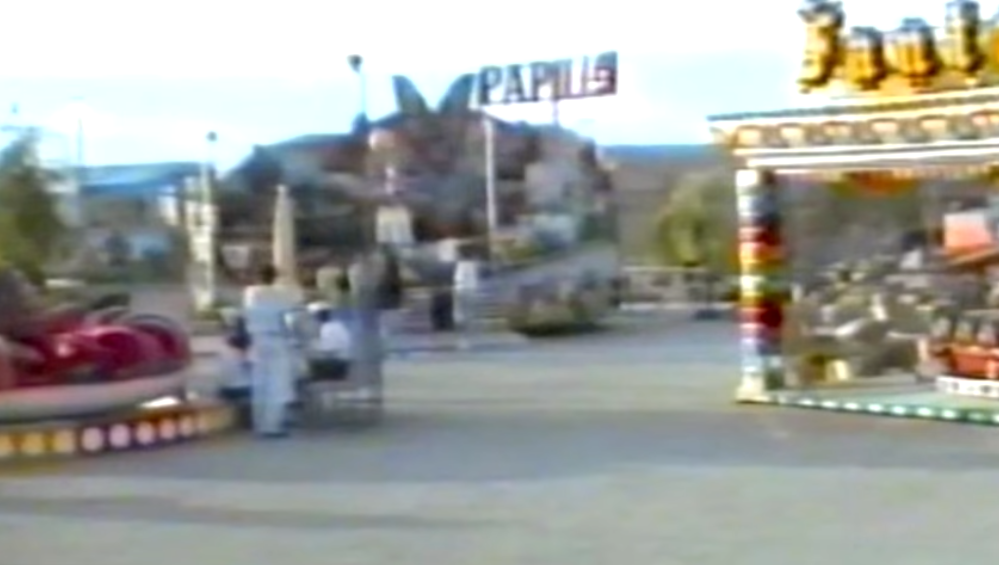>Algunas de las atracciones fueron compradas por Roberto Faggioni, dueño del circo americano a tres pistas. Actualmente se encuentran cada verano recorriendo la costa catalana. La última vez fueron vistas en Palamós (Gerona)
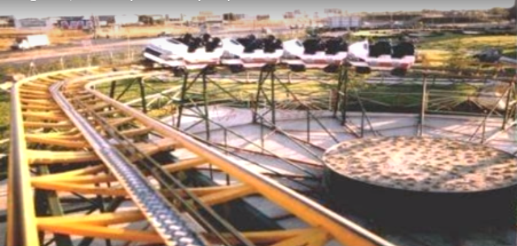>Hubo muchas especulaciones de por qué se cerró destacando la de "accidentes mortales" aunque realmente fue por la mala recaudación que recibían pues sólo abría en verano y tenían que conservarlo todo el año.

Síguenos en Facebook